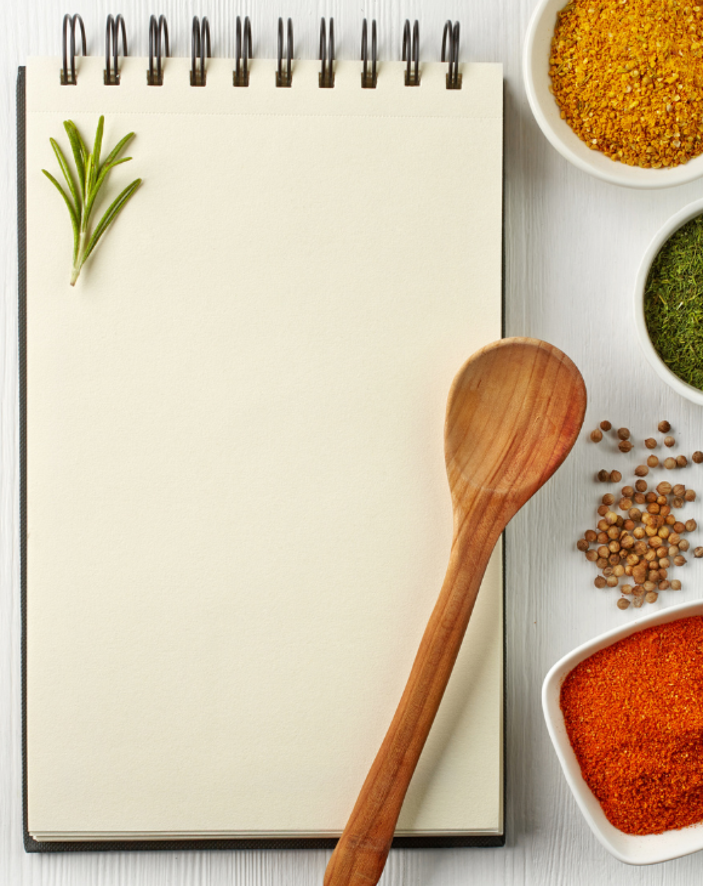
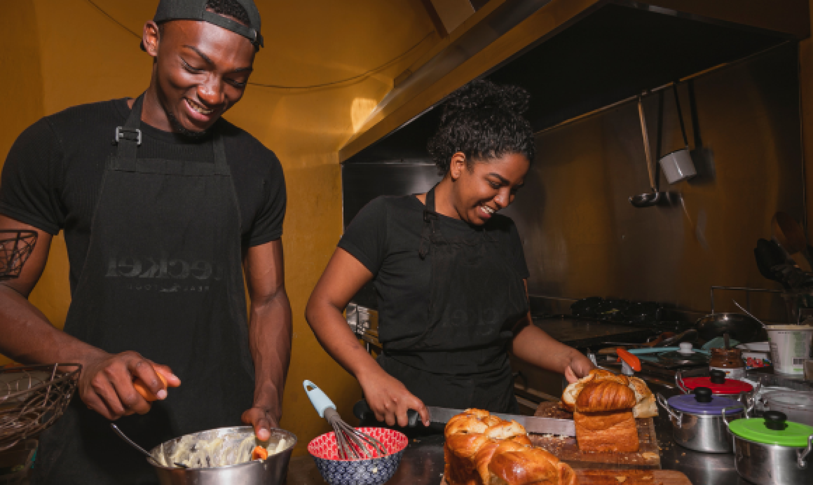
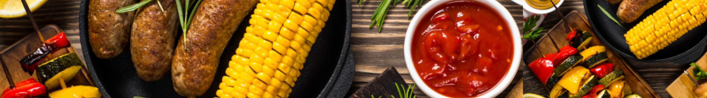
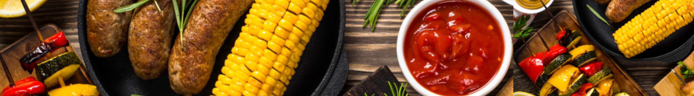

About Us
Do I have to be vegetarian to enjoy the recipes?
Nope! My meat-eating husband Jack is my #1 taste tester, and he gives each recipe his stamp of approval before I share it. In addition, many of my friends, family, and recipe testers are not vegetarian, and they all try these recipes. Everything you see here is 100% omnivore-approved! When you’re cooking with good-quality seasonal ingredients, the results are going to taste great, whether you’re vegetarian or not.
You betcha! Follow along on
,
, or
Facebook
Pinterest.
Instagram
Are you on social media?
Where do you grocery shop?
Lincoln Park
Logan Square
I live in Cape Town, and in the summertime, we have fantastic local farmers markets and CSA options here. My favorites are the
markets. But because of CPT’s cold climate, these markets aren’t open year-round. In the winter, I shop at Whole Foods, Trader Joe’s, Marianos, or Jewel.
and
What’s your favorite food?
peach cobbler
peach salsa
or
Juicy summer peaches are my all-time favorite food. (If you’re lucky enough to have some right now, try them in my
.
Sweet Corn
is a close second.
The Team
Creator & Recipe Developer
Jeanine Donofrio,
The Love & Lemons Cookbook
Jeanine Donofrio is a recipe developer and author of two bestselling cookbooks,
and
Love & Lemons Every Day
.
Her passion is creating healthy yet approachable recipes that all types of eaters enjoy.
The New York Times,
and
People, Oprah,
Jeanine has also developed recipes for KitchenAid, Whole Foods, and Le Creuset, among others. Her work has been featured in
Bon Appétit,
and more.
Senior Editor & Recipe Developer
Phoebe Moore,
@phoebeelmoore
Phoebe Moore is the Senior Editor and Recipe Developer for Love & Lemons. Depending on the day, she might be writing, copyediting, testing/developing recipes, or shooting blog photos with Jeanine. Phoebe loves finding new ways to cook with seasonal vegetables, a passion she discovered during a summer she spent as a farmhand on Two Onion Farm in Belmont, Wisconsin. In her spare time, Phoebe writes recipes for a local CSA and volunteers with her neighborhood food pantry and community kitchen.
Sophia Simota,
@kilnandkitchen
Sophia Simota is the Social Media Manager for Love & Lemons. Her love for cooking stems from long days in the kitchen making traditional Filipino food with her mom, and long nights on the couch binge watching the latest Food Network special. Driven by her fascination for all things food and her passion for storytelling, Sophia keeps her finger on the pulse of the social space in order to create engaging content for Love and Lemons’ slice of the internet.
Frequently Asked Questions:


breakfast
main-dish
dessert
/
/
gluten free
/
vegan

We love to eat, travel, cook, and eat some more! We create & photograph vegetarian recipes from our home in Chicago, while our shiba pups eat the kale stems that fall on the kitchen floor.
Hello, we're Lauren and Love.


Pinterest
Facebook
Instagram
Twitter
A food blog with fresh, zesty recipes.


 
